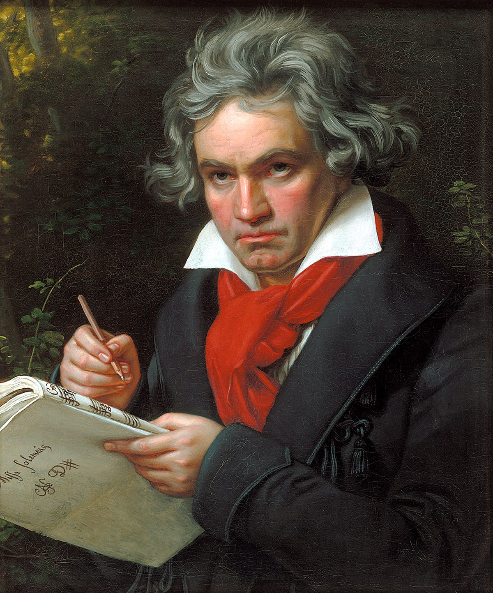

- Egmont
- Leonore
- The Ruins of Athens
- Missa Solemnis
- Fidelio
- Emperor Piano Concerto No.5
- Appassionata
- Hammerklavier
- Moonlight
- Pathetique
- Waldstein
- Archduke
- Ghost
- An Die Ferne Geliebte
- Grand Fugue, Op.133
- Razumovsky
- Choral Symphony No.9
- Eroica Symphony No.3
- Pastoral Symphony No.6
- Symphony No.5, Op.67
- Kreutzer
- Spring
- Corontation Mass, K.317
- Cosi fan tutte
- Don Giovanni
- The Marriage of Figaro
- Idomeneo
- La Clemenza di Tito
- Fantasia in C minor, K.475
- Sonata in A major, K.331
- Sonata in C minor, K.457
- Quintet for Clarinet and Strings
- Requiem, K.626
- Eine Kleine Nachtmusik
- Die Entfuhrung aus dem Serail
- Die Zauberflote
- Dissonance, K.565
- Haffner Symphony No.35
- Jupiter Symphony No.41
- Linz Symphony No.36
- Prague Symphone No.38
- Lord Nelson Mass
- Mass in Time of War
- Die Jahreszeiten
- Die Schopfung
- Die Sieben Letzten Worte
- Emperor
- Quinten
- Clock Symphony No.101
- Farewell Symphony No.45
- Hen Symphony No.83
- London or Salamon Symphonies No.93-104
The Classical Period
The Classical era (c.1750-1825) witnessed the transfer of power from the aristocracy to the middle class. The Classicists seeked order, stability, symmestry, and structural balance in their music. Classical music adhered to the principals and styles of the literature and art of ancient Greece and Rome. Romantic elements such as emotional qualities and greater freedom of form appeared later on in the Classical period. Composers during the Classical period attempted to explore the full possibilities in the major-minor system. The texture is mainly Homophonic, with the melody as symmetrical phrases. The main forms are theme and variations, rondo, binary, ternary, and sonata form. The majority of Classical music is absolute music.
Ludwig Van Beethoven
Ludwig Van Beethoven: His Life
Beethoven was born in Bonn, Germany. His father and grandfather were professional singers for court of prince Max Friedich. He originally studied with his father and later with Christian Neefe, an organist. He became assistant organist in the court chapel at eleven and a half, and became harpsichordist in the court orchestra a year later. At the age of sixteen, he went to study with Mozart. However Mozart died in 1791. Beethoven never served a court, but had a variety of patrons including Prince Lichnowsky, Prince Lobkowitz, Count Razumovsky, and Count Waldstein. Within a few years in Vienna, Beethoven became one of the greatest pianists of his time, a teacher, and an astonishing composer. He became extremely rich due to how wealthy his patrons were. In his late twenties, Beethoven began to lose his hearing. He moved into the rural areas and retired in 1802 as recommended by one of his doctors. However his hearing got worse even after living in isolation. He made the decision to continue to compose music even after he became completely deaf. Beethoven was always miserable as he never had several unsuccessful love affairs. On top of that, he had a terrible relationship with his nephew after the death of his brother Caspar. He died in Vienna in 1827.
Ludwig Van Beethoven: His Music
Beethoven expanded many genres during the Classical era including: symphonies, concertos, string quartets, and sonatas. His early compositions consisted of the typical Classical elements from previous composers during the classical period. He applied Sturm und Drang in many of his pieces that have minor keys. The middle period of his compositions began in 1803 after his hearing condition worsened. His music during this period began to have a dominant heroic character, and had increase in the use of elements typically used during the Romantic period. Elements including: unusual modulations, explosive accents, extreme dynamic contrasts, and increased chromaticism. Beethoven expanded the development and coda of the sonata form in the first and third movements. He made the second slow movements become a hymn like character. He changed the minuet in the third movement of the sonata form into a dramatic scherzo. He also added additional elements such as new orchestral instrucments like the double bassoon, trombone, and piccolo. The late period of his music began in 1815 where he became completely deaf, his nephew attempted suicide, and he ended longest love relationship. His style became more abstract and meditative. He used counterpoint more frequently while continuing to experiment with the Classical forms.
Ludwig Van Beethoven: Notable Compositions
Wolfgang Amadeus Mozart
Wolfgang Amadeus Mozart: His Life
Mozart was born in Salzburg, Austria in 1756 to Leopold Mozart, a violinist and a composer. Mozart began to compose when he was five and performed for Empress Maria Theresa when he was 6. Mozart was a rebel against the patronage system. This strained the relationships between him and his employers. He was dismissed at twenty-five after arguing with the Archbishop of Salzburg. Mozart had great trouble financially after this action and had to work as a free-lance musician. Despite of this he still married and had six children. This led to him constantly moving houses and avoiding tax collectors. He was eventually offered a low paying job by Emperor Joseph II. However, the king was in favor of the other composer named Antonio Salieri and only gave Mozart minor roles. After the death of Joseph II in 1790, his brother Leopold II, King of Bohemia was his successor. Mozart attempted to impress the king to get a better position through his compositions. However the king was dissatisfied and Mozart remained at the same post. In the year before his death, he composed The Magic Flute. He was happy by the growth of its popularity in his last days. He died in 1791 at the age of thirty five.
Wolfgang Amadeus Mozart: His Music
Mozart composed with an elegant courtly style. His melodies are simple, elegant, and songful. Anything he composed is usually based on symmetrical four bar phrases with clear cadences at the end of each phrase. Mozart liked chromatic harmonies especially in the development section of the sonata form. Mozart put a lot of drama into his music. He contrasted mood and emotion such as from playful and lively to tragic and serious. He composed more than forty symphonies, and twenty seven piano concertos. He composed in three opera styles: opera buffa, Singspiel, and opera seria. Opera buffa is a form of comic Italian opera, Singspiel is a lighter form of German opera, and opera seria is a form of serious Italin opera. Mozart mostly composed his operas in a sonata-type structure.Wolgang Amadeus Mozart: Notable Compositions
Joseph Haydn (1732-1809) was borin in Rohrau, Austria to a family with twelve children. His natural heritage contained Folksong and dance.
Return to the top of the page.
©RichardYang2018
Some peoples dogs also believe in god. Life sucks.

Franz Joseph Haydn
Franz Joseph Haydn: His Life
Joseph Haydn (1732-1809) was borin in Rohrau, Austria to a family with twelve children. Haydn sang at St.Stephen's Cathedral in Vienna since he was eight. There he learned not only to sing, but to play the klavier, organ, and the violin. He left the school when his voice broke at the age of seventeen. He settled in an attic in Vienna, obtained a harpsichord, and studied music. He made a living with other musicians by playing on the streets and by teaching. He attracted the attention of the nobles in Vienna. He entered the service of the Esterhazy family, a family of wealthy Hungarian princes when he was 29. Although his status was a servant, he had a uniform and had a stable source of income. He remained with the Esterhazys for almost thirty years. The majority of his music was performed in Eszterháza, the palace of the Esterhazys. Haydn was given entire control of the entire orchestra, and was able to compose, conduct, and experiment however he wanted. The family was satisfied with the works of Haydn and constantly gave him praise and approval. After the prince died in 1790, his successor was not interested in music. Haydn went to London after being invited to compose for the impresario, Salomon. He made two visits to England where he conducted his works and became a huge success. Haydn died in 1809.
Franz Joseph Haydn: His Music
Haydn developed the sonata form, rondo form, and sonata-rondo form. He played an important role for the evolution of the string quartet, symphony, and sonata. Haydn composed more than one hundred symphonies based on the sonata cycle. His string quartets also followed the sonata cycle. His use of chromatic harmony, syncopation, endlessly varied modes, sudden crescendos and accents, dramatic contrasts of soft and loud, modulations, colour, and slow introductions, were used by many later composers.